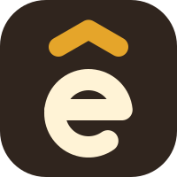
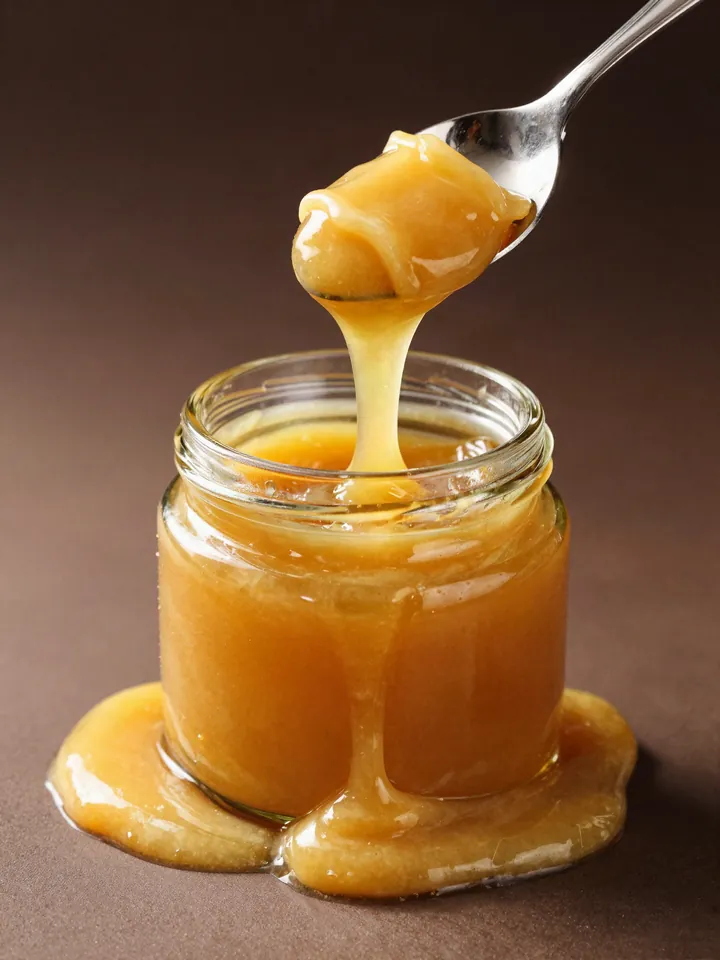
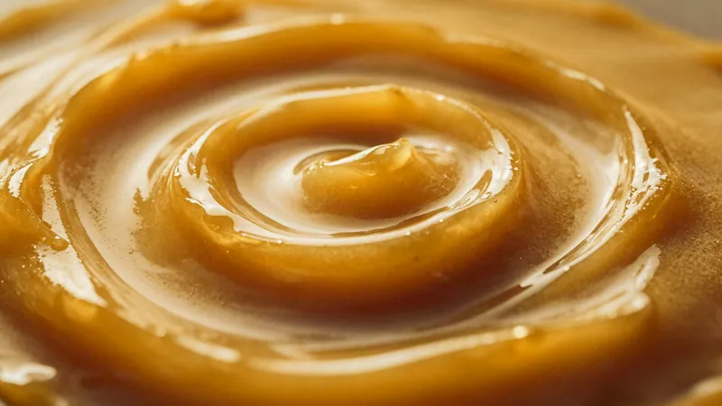
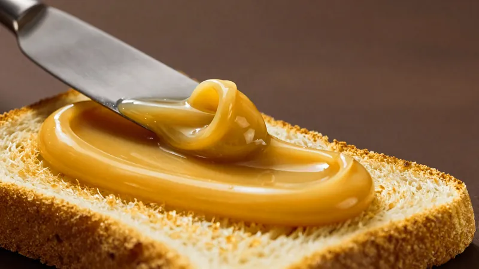
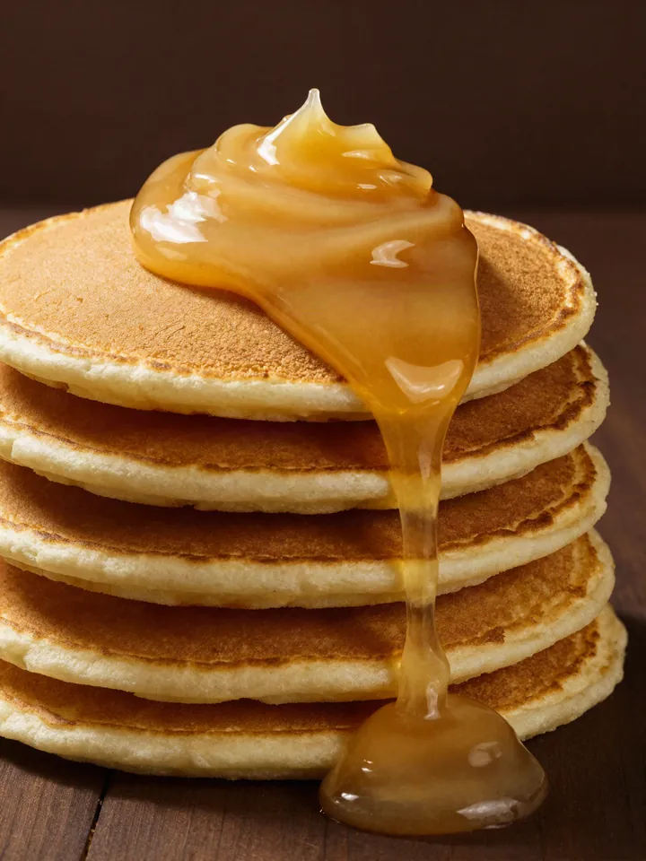
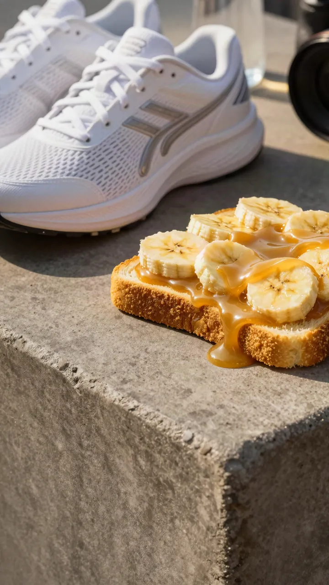
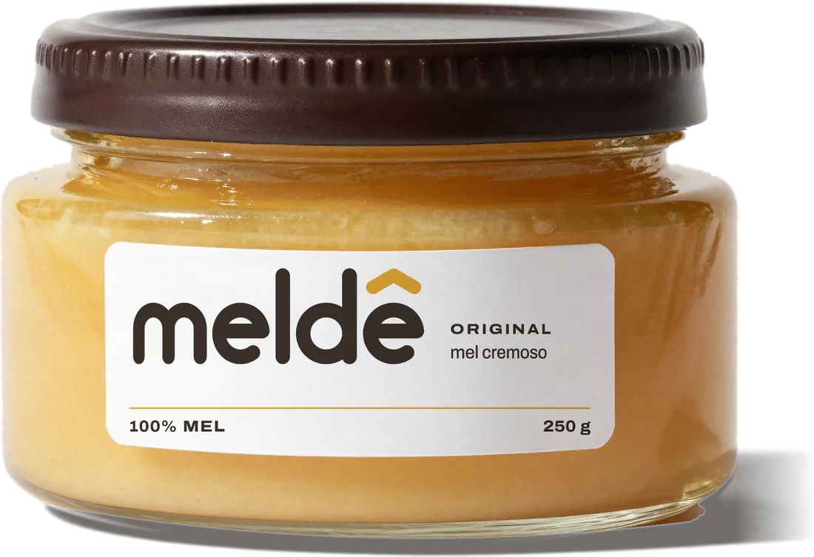
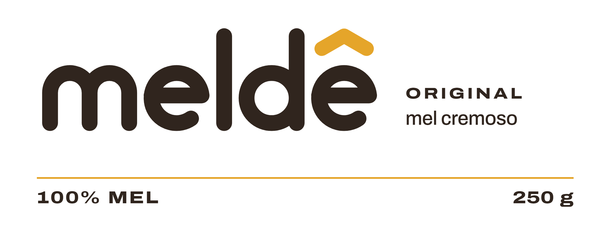

Mel, só que cremoso.
Identidade visual e design system. A base da landing de lançamento e do e-commerce que vem depois.
- Produto
- Meldê Original · mel cremoso · 100% mel · 250 g
- Direção
- O rótulo desenrolado
- Território
- Mel + textura + energia + ritual + prazer
01 · Conceito
A página é o rótulo.
Tudo nasce do pote: o branco do rótulo e o marrom da tampa são os fundos; o dourado é a luz do produto e só aparece onde há mel ou ação. Cada tela é um painel do rótulo aberto em plano, com janelas arredondadas que deixam ver a textura, como o vidro transparente deixa ver o creme.
- 1
Textura primeiro
Toda superfície tem que dar vontade de provar. Fotografia macro, brilho, dobras, colher puxando.
- 2
Luz reservada
O dourado é luz, não tinta: produto, fotografia e botões de ação. Nunca decoração solta.
- 3
Escala com coragem
Saltos grandes entre o display e o texto. Títulos que se espalham, como o produto.
- 4
Honesto e curto
100% mel é a única alegação. Nada de promessa nutricional, médica ou esportiva.
- 5
Sem clichê de mel
Sem abelha desenhada, sem favo decorativo, sem pegador de madeira, sem kraft rústico.
02 · Logo
O ê é a assinatura.
Wordmark proprietário em minúsculas, desenhado em traço redondo e pesado (espessura de 24% da altura-x). O circunflexo dourado abre a 120°, o ângulo interno do hexágono: a colmeia aparece só na geometria, nunca como desenho.

- Área de proteção
- A altura do circunflexo (≈ 0,4 × altura-x) livre em volta de todo o wordmark.
- Tamanho mínimo
- 72 px de largura em tela · 18 mm impresso. Abaixo disso, use o símbolo ê.
- Cor
- Letras em marrom #30251E ou creme #FFF3D6; circunflexo em dourado #E5A52A. Sobre dourado, tudo em marrom.
- Arquivos
- assets/brand/: wordmark, wordmark-creme, wordmark-branco, wordmark-marrom, simbolo, favicon, circunflexo.
- Abelha ou favo ao lado do logo
- Letras em dourado sobre branco
- Degradê, contorno, sombra ou brilho
- Esticar, inclinar ou reescrever em outra fonte
- Maiúsculas: é sempre meldê
03 · Cor
Branco de rótulo, marrom de tampa, luz de mel.
#E5A52A · --mel-400Produto, fotografia, ações. Texto sobre ele: marrom (6,9:1).
#30251E · --marrom-900Tampa. Texto principal e fundos escuros.
#FFFFFF · --brancoRótulo. Fundo principal.
#FFF3D6 · --mel-50Tinta de janela e texto sobre escuro. Nunca o fundo de um painel inteiro.
Contraste verificado: marrom sobre branco 14,9:1 · creme sobre marrom 13,5:1 · marrom sobre dourado 6,9:1 · texto secundário #6E5A4B sobre branco 6,5:1. Dourado nunca é cor de texto sobre branco.
04 · Tipografia
Uma família, três larguras.
Archivo, variável em peso (100–900) e largura (62–125%). Expandida e black para display, porque o título se espalha como o produto; largura normal para texto; semi-expandida em caixa alta espaçada para as microinformações de rótulo. Hospedada no projeto (assets/fonts).
Mel, só que cremoso.
Espalha. Mistura.
Textura cremosa
É mel. Só que cremoso: fica na colher e desliza no pão.
Abre a banana, afunda a colher. O lanche mais rápido da casa. Medida de linha entre 45 e 75 caracteres.
100% mel · peso líquido 250 g
Mel.
05 · Grid, espaço e forma
Grade de rótulo, módulo de 8.
- Colunas
- 12 · largura máxima 1680 px
- Margem
- 16 → 72 px (4,4vw)
- Calha
- 12 → 28 px (1,6vw)
- Respiro de seção
- 88 → 176 px (10vw)
481216243248649612806 · Componentes
Selos, campos, painéis.
Selo (botão de ação)
Sobre dourado o selo inverte para marrom. Hover: o ponto avança 4 px e o fundo clareia; nada salta.
Campos
Coloca um WhatsApp com DDD ou um e-mail válido.
Tabela de rótulo
- Ingredientes
- Mel
- Peso líquido
- 250 g
- Textura
- Cremosa
Código de painel
P-06 · Produto
Marca de corte no canto do painel, nunca acima do título. Na tampa (header) indica onde a pessoa está.
Janela e lacre
07 · Ícones
Tudo sai do circunflexo.
Grade de 24, traço 3, pontas e junções redondas: a mesma proporção do wordmark. O circunflexo girado vira seta, voltar ao topo e marcador. Os ícones de loja seguem o mesmo traço.
08 · Fotografia
Campanha de sobremesa, universo do mel.
Macro, luz quente lateral, sombras esculpidas, brilho especular. Fundos marrom-chocolate, creme ou dourado. O creme é opaco, denso, dourado: nunca líquido translúcido, nunca caramelo marrom.





Sempre
- Colher puxando, dobras, fios grossos
- Luz quente lateral + contraluz no creme
- Fundos lisos marrom, creme ou dourado
- Pote transparente mostrando o creme
- “Imagem ilustrativa” em fotos de sugestão
Nunca
- Abelhas, favos, pegador de madeira
- Mesa rústica, juta, kraft, fazenda
- Mel líquido e translúcido
- Academia, halteres, shaker, suor
- Filtros frios ou dessaturados
Shot list do ensaio real
- Colher puxando do pote Meldê (vertical e horizontal)
- Macro da superfície com espiral de colher
- Faca espalhando em torrada, onda na lâmina
- Banana aberta com Meldê, luz de manhã
- Panqueca com colherada escorrendo
- Iogurte e aveia, vista de cima
- Pré-treino: tênis, garrafa, torrada, luz de amanhecer
- Packshot 3/4 e frontal, fundo branco e marrom
- Colherada flutuando, fundo marrom
As imagens desta versão foram geradas por IA (Higgsfield · Z Image) como direção de arte e tratadas para a paleta. Substituir pelo ensaio real antes do lançamento.
09 · Embalagem
Pote baixo, largo, transparente.


- Frente
- meldê · ORIGINAL · mel cremoso · 100% MEL · 250 g. Nada além disso.
- Rótulo
- Papel branco fosco, faixa frontal com cantos arredondados, deixando vidro visível acima e abaixo. Filete dourado como único detalhe metálico.
- Tampa
- Marrom profundo #30251E, borda canelada, símbolo ê no topo.
- Verso
- Tabela nutricional, ingredientes (mel), lote, validade, SAC e informações obrigatórias. Hierarquia de rótulo, a mesma da landing.
- Protein (futuro)
- Mesmo pote; tampa e filete mudam de cor, o wordmark não muda. Não desenvolvida nesta fase.
10 · Movimento
Viscoso, nunca elástico.
Poucas animações, muito bem feitas. Tudo começa rápido e assenta devagar, como o creme saindo da colher. Nada quica, nada pisca. Com “reduzir movimento” ativo, o conteúdo aparece pronto e o fio já vem desenhado.
--ease-mel: cubic-bezier(.2, .7, .1, 1)- 180 ms
- Hover e pressão
- 320 ms
- Estados de interface
- 900 ms
- Revelar títulos, linha a linha
- 1200 ms
- Entrada do hero, uma vez
- 1Entrada do hero: título sobe por linha, janela abre de baixo para cima, pote assenta.
- 2O fio de mel: sai da colher do hero e se desenha com o scroll até a colher do fim.
- 3Parallax abaixo de 6%: fotos se movem dentro das janelas; o pote acompanha o scroll.
- 4Textura viva: o macro dentro de “MEL.” desliza com a rolagem.
- 5Seletor de momentos: a foto troca por dissolução quando a linha passa pelo meio da tela.
11 · Voz
Curta, gostosa, honesta.
- Mel, só que cremoso.
- Energia em outra textura.
- Seu pré começa aqui.
- Espalha. Mistura. Mergulha.
- 100% mel. Outra experiência.
- Prova uma colher. Depois a gente conversa.
Fala assim
- Verbos de gesto: espalha, puxa, mergulha, cobre
- Frases curtas, com ponto final
- Você, a gente; português de conversa
- Humor leve sobre textura
Não fala
- Alegações como “fonte de energia”, “performance”, “imunidade”
- “Natural”, “da roça”, “artesanal”
- Comparação depreciativa com doce de leite
- Qualquer número que não esteja no rótulo